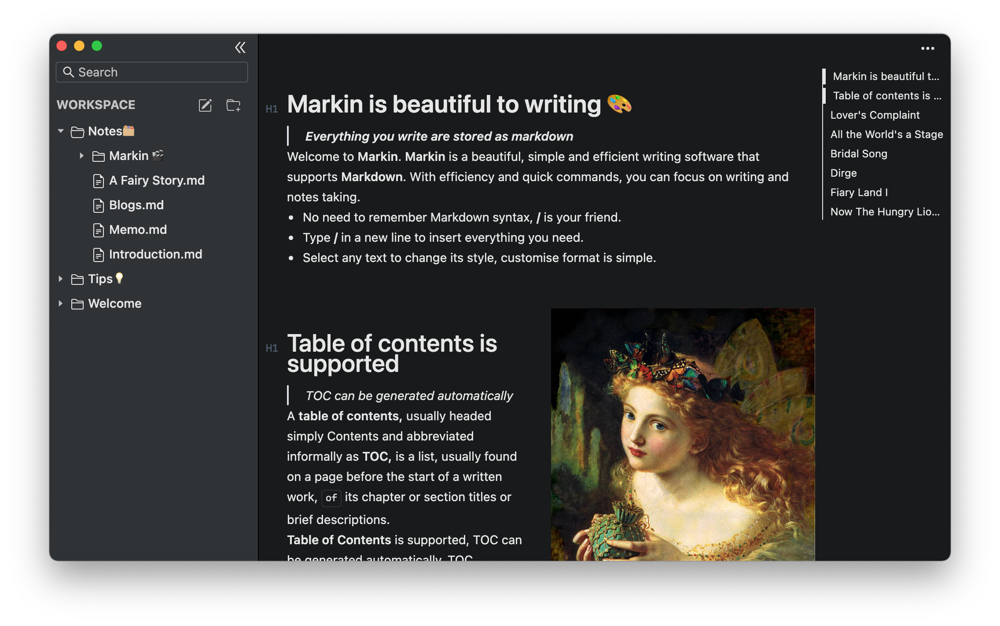
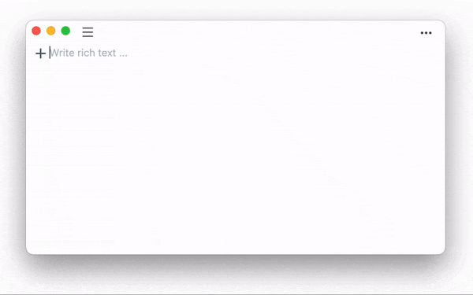

Writing and notes taking with Markdown.
Markin is beautiful and efficient📝
Everything you write are stored as markdown
 Welcome to Markin. Markin is a beautiful, simple and efficient writing software that supports Markdown. With efficiency and quick commands, you can focus on writing and notes taking.
- No need to remember Markdown syntax, / is your friend.
- Type / in a new line to insert everything you need.
- Select any text to change its style, customise format is simple.

Table of contents is supported
TOC can be generated automatically
A table of contents, usually headed simply Contents and abbreviated informally as TOC, is a list, usually found on a page before the start of a written work, of its chapter or section titles or brief descriptions.